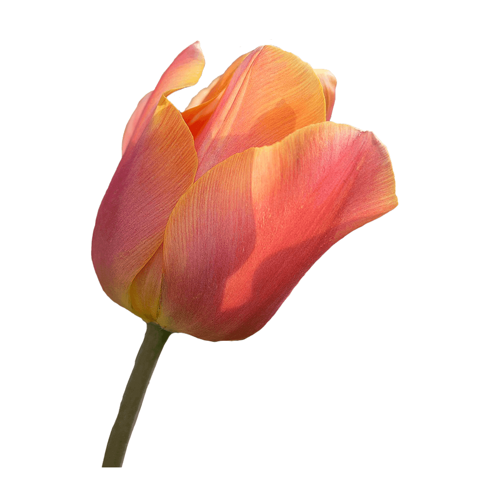

Taviraj is a serif Latin and looped Thai typeface that has a wide structure that ensures readability and legibility. It is well-suited for formal usage. Thai letters have thick and thin strokes, similar to the Latin, together with rounded and airy looped terminals.
Taviraj takes a specific approach when dealing with the thick and thin strokes of Thai glyphs. Other type designers of Thai fonts may like to use this approach as a reference.
The Taviraj project is led by Cadson Demak, a type foundry in Thailand.
Font available from Google Fonts.
Tulips flowers are usually large, showy and brightly coloured, generally red, pink, yellow, or white. They often have a different coloured blotch at the base of the tepals.
The name “Tulip” is thought to be derived from a Persian word for turban, which it may have been thought to resemble.
The meaning of Tulips is generally perfect love. Like many flowers, different colours of Tulips also often carry their own significance. Red Tulips are most strongly associated with true love, while purple symbolises royalty. White Tulips are used to claim worthiness or to send a message of forgiveness. Yellow Tulips used to symbolise unrequited love but now they have come to mean joy and cheerful thoughts. Pink Tulips have a less intense meaning of love and are a more appropriate to gift for family and friends.